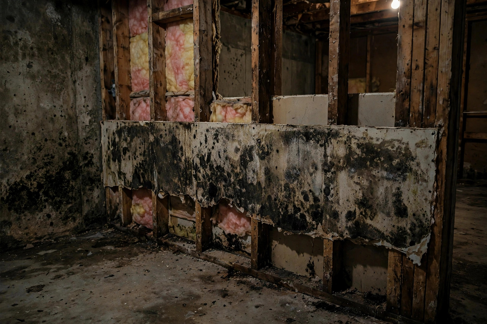

Basement Mold Cleanup in Nampa, ID
Below-grade walls live in damp soil year-round. When drainage fails or humidity climbs, mold takes hold fast. We clean it out and address what's feeding it.

How basement cleanup works
Assess the spread
Moisture readings map how far water has traveled through walls and slab. The full extent is marked before work starts.
Contain the zone
Plastic barriers and negative air keep spores from migrating upstairs while the basement is worked on.
Remove growth
Contaminated drywall, carpet, and insulation come out. Masonry gets scrubbed and HEPA-vacuumed.
Dry and verify
Dehumidification brings humidity down, then readings confirm every surface is dry before the space is released.
What feeds basement mold near the Highline
Homes along the Highline canal corridor deal with a high water table. These are the entry points we see most.
Wall-floor joint seepage
Hydrostatic pressure forces water through the cove joint where wall meets slab. Efflorescence often marks the spot.
Summer humidity stacking
Warm outside air meets cool basement walls. Without a dehumidifier, condensation keeps surfaces damp for months.
Grading toward the foundation
Soil settled against the house funnels rain and irrigation water straight to the footing instead of away from it.
Finished and unfinished need different handling
Open walls, open options
Exposed concrete and framing are straightforward: scrub the masonry, treat the wood, and dry everything with commercial dehumidifiers. Fewer materials to remove means faster turnaround and lower cost. The main question is drainage — whether water is still finding its way in.
Hidden damage costs more
Drywall hides the extent of growth until it's opened. Carpet and pad trap moisture underneath. Finished basements almost always need selective demolition before cleanup can begin — but catching it early limits how much comes out.
A homeowner near the Highline notices a damp smell every August. The inspection finds the wall-floor joint weeping after irrigation season starts. Cleanup removes the affected drywall, the joint gets sealed, and a dehumidifier keeps summer humidity in check.
Dehumidifier sizing matters
A small portable dehumidifier can't keep up with a damp Nampa basement. Sizing is measured in pints per day — how much water the unit pulls from the air in 24 hours. A musty 1,000-square-foot basement in a humid summer typically needs 50 to 70 pints per day of capacity.
Placement matters as much as size. The unit should sit centrally with airflow around it, draining to a floor drain or pump — not a bucket you'll forget to empty. And it needs to run continuously during the damp months, not just when the smell returns.
After professional cleanup, the right dehumidifier is what keeps the basement dry between seasons. It's the cheapest insurance against a repeat.
What basement cleanup typically involves
Every basement differs, but the work usually falls into these bands.
| Scope | Typical work |
|---|---|
| Small patch | Surface cleaning and drying of one wall section |
| One wall | Drywall removal, framing treatment, drying |
| Full basement | Contained remediation across multiple walls plus dehumidification |
Ranges vary with access and materials. A quick call with a few details gets you a tighter estimate.
Common questions, straight answers
Why do Nampa basements get mold so often?
Many sit near the Highline canal corridor where the water table runs high. Hydrostatic pressure pushes moisture through foundation walls and floor seams.
Can I just bleach the basement walls?
Bleach lightens the color but doesn't reach roots in porous concrete. The EPA notes that porous materials with mold growth often need removal rather than surface treatment.
Do you waterproof basements too?
Cleanup addresses the existing mold. For ongoing seepage, an exterior or interior drainage solution is a separate project — we're happy to explain the options.
How long does a basement stay dry after cleanup?
That depends on the moisture source. Fix the grading, gutters, or seepage driving it and the result lasts. Skip that step and it returns.
Is basement mold different from upstairs mold?
The species are often the same, but basements stay cooler and damper, so colonies grow faster and spread wider before anyone notices.
Basement smelling musty?
Below-grade problems get worse when ignored. Call now and we'll map the moisture before it spreads further.